library(ggplot2)
library(dplyr)
library(tidyr)
library(scales)
theme_set(theme_minimal(base_size = 14))面积图与堆叠可视化完全指南
数据可视化
趋势图
可视化
ggplot2
从基础面积图到河流图：堆叠面积、百分比堆叠、分组对比与美化技巧完全教程。
前言
面积图是折线图的延伸，它通过填充线下区域来强调数量累积或比例变化。适用于：
- 时间序列堆叠：各部分对总体的贡献
- 比例变化：市场份额、预算分配
- 流量可视化：网站流量来源、用户转化
本教程将详细介绍 R 语言中各类面积图的绑制方法。
基础面积图
准备工作
创建示例数据
# 模拟网站流量数据
set.seed(42)
months <- seq(as.Date("2024-01-01"), as.Date("2025-12-31"), by = "month")
traffic_data <- data.frame(
date = months,
organic = 1000 + cumsum(rnorm(length(months), 50, 100)),
paid = 500 + cumsum(rnorm(length(months), 30, 80)),
social = 300 + cumsum(rnorm(length(months), 20, 50)),
direct = 200 + cumsum(rnorm(length(months), 10, 30)),
referral = 150 + cumsum(rnorm(length(months), 5, 20))
)
head(traffic_data) date organic paid social direct referral
1 2024-01-01 1187.096 681.6155 298.4277 228.7055 132.3652
2 2024-02-01 1180.626 677.1779 351.2101 210.0998 108.1809
3 2024-03-01 1266.939 686.5964 387.3063 203.8150 114.7806
4 2024-04-01 1380.225 575.5433 368.1144 231.2449 132.8447
5 2024-05-01 1470.652 642.3511 466.9008 264.2902 161.8640
6 2024-06-01 1510.040 621.1515 519.0457 288.2033 187.7590单变量面积图
ggplot(traffic_data, aes(x = date, y = organic)) +
geom_area(fill = "#4e79a7", alpha = 0.7) +
geom_line(color = "#4e79a7", linewidth = 1) +
labs(
title = "自然搜索流量趋势",
x = "日期",
y = "访问量"
)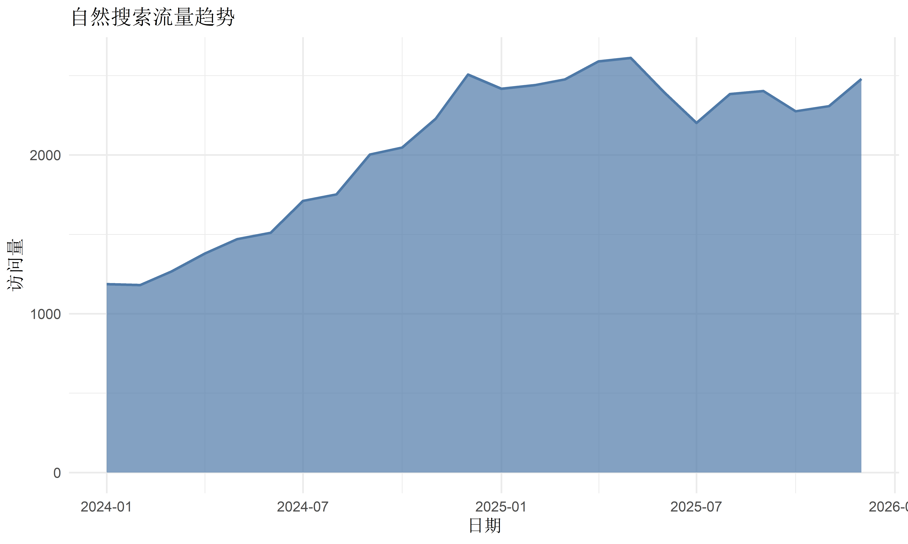
添加渐变效果
ggplot(traffic_data, aes(x = date, y = organic)) +
geom_area(fill = "#4e79a7", alpha = 0.3) +
geom_line(color = "#4e79a7", linewidth = 1.2) +
geom_point(color = "#4e79a7", size = 2) +
labs(
title = "自然搜索流量趋势",
subtitle = "半透明填充 + 折线标记",
x = "日期",
y = "访问量"
)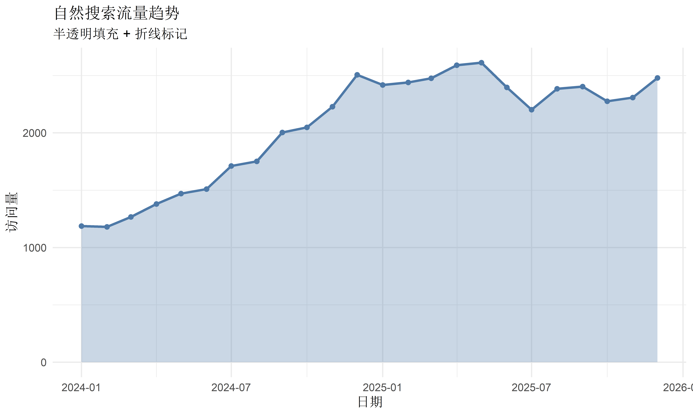
堆叠面积图
数据整理
# 转换为长格式
traffic_long <- traffic_data %>%
pivot_longer(
cols = c(organic, paid, social, direct, referral),
names_to = "source",
values_to = "visits"
) %>%
mutate(
source = factor(source,
levels = c("organic", "paid", "social", "direct", "referral"),
labels = c("自然搜索", "付费广告", "社交媒体", "直接访问", "外部引荐")
)
)
head(traffic_long)# A tibble: 6 × 3
date source visits
<date> <fct> <dbl>
1 2024-01-01 自然搜索 1187.
2 2024-01-01 付费广告 682.
3 2024-01-01 社交媒体 298.
4 2024-01-01 直接访问 229.
5 2024-01-01 外部引荐 132.
6 2024-02-01 自然搜索 1181.基础堆叠面积图
# 定义配色
source_colors <- c(
"自然搜索" = "#4e79a7",
"付费广告" = "#f28e2b",
"社交媒体" = "#59a14f",
"直接访问" = "#e15759",
"外部引荐" = "#76b7b2"
)
ggplot(traffic_long, aes(x = date, y = visits, fill = source)) +
geom_area(alpha = 0.8) +
scale_fill_manual(values = source_colors) +
labs(
title = "网站流量来源构成",
subtitle = "堆叠面积图展示各渠道贡献",
x = "日期",
y = "总访问量",
fill = "流量来源"
) +
theme(legend.position = "bottom")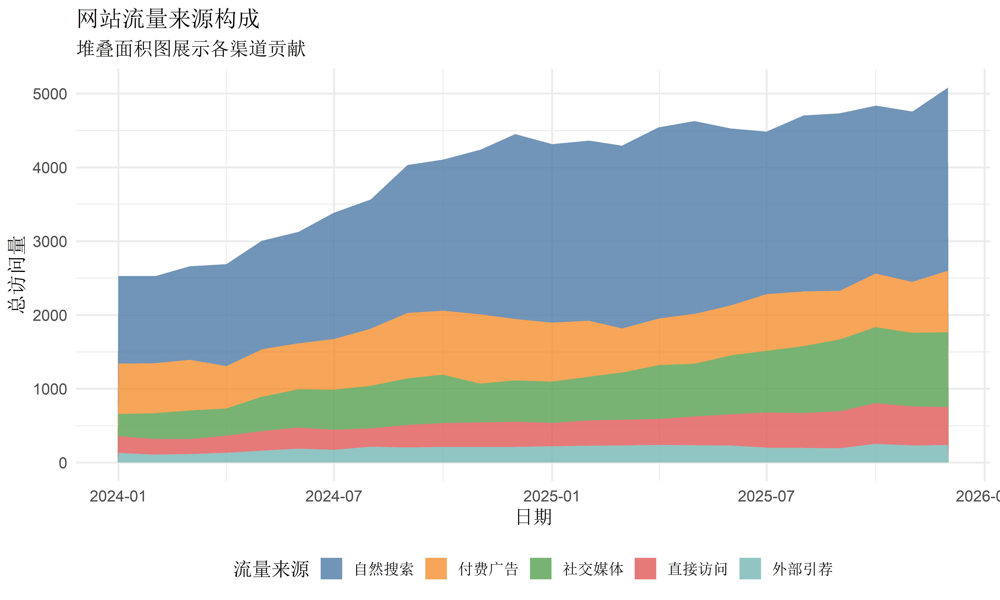
调整堆叠顺序
# 按平均流量排序（大的在下面）
source_order <- traffic_long %>%
group_by(source) %>%
summarise(mean_visits = mean(visits)) %>%
arrange(desc(mean_visits)) %>%
pull(source)
traffic_long$source <- factor(traffic_long$source, levels = rev(source_order))
ggplot(traffic_long, aes(x = date, y = visits, fill = source)) +
geom_area(alpha = 0.8) +
scale_fill_manual(values = source_colors) +
labs(
title = "网站流量来源构成（按流量排序）",
x = "日期",
y = "总访问量",
fill = "流量来源"
) +
theme(legend.position = "bottom")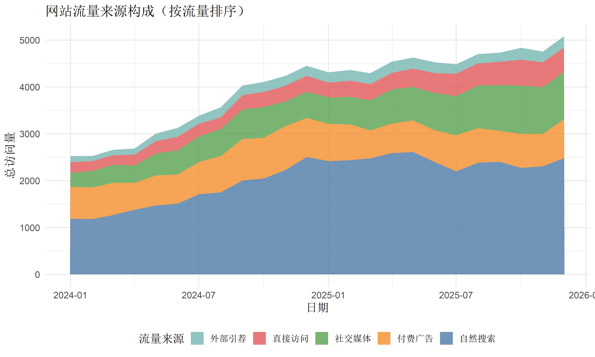
3. 百分比堆叠面积图
position = “fill”
ggplot(traffic_long, aes(x = date, y = visits, fill = source)) +
geom_area(position = "fill", alpha = 0.8) +
scale_fill_manual(values = source_colors) +
scale_y_continuous(labels = percent_format()) +
labs(
title = "流量来源占比变化",
subtitle = "100% 堆叠面积图",
x = "日期",
y = "占比",
fill = "流量来源"
) +
theme(legend.position = "bottom")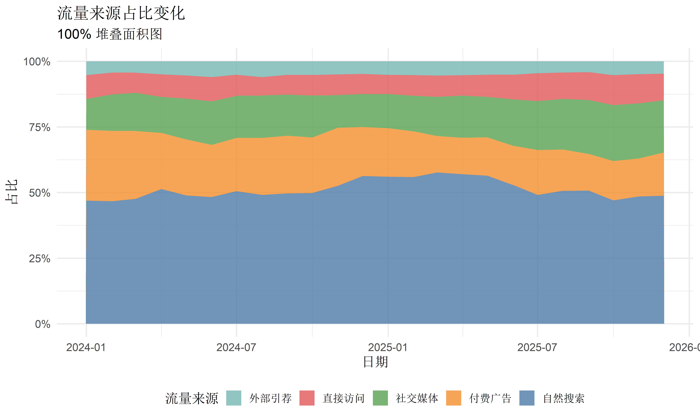
添加边界线
ggplot(traffic_long, aes(x = date, y = visits, fill = source)) +
geom_area(position = "fill", alpha = 0.8, color = "white", linewidth = 0.3) +
scale_fill_manual(values = source_colors) +
scale_y_continuous(labels = percent_format()) +
labs(
title = "流量来源占比变化",
subtitle = "添加白色边界线提升层次感",
x = "日期",
y = "占比",
fill = "流量来源"
) +
theme(legend.position = "bottom")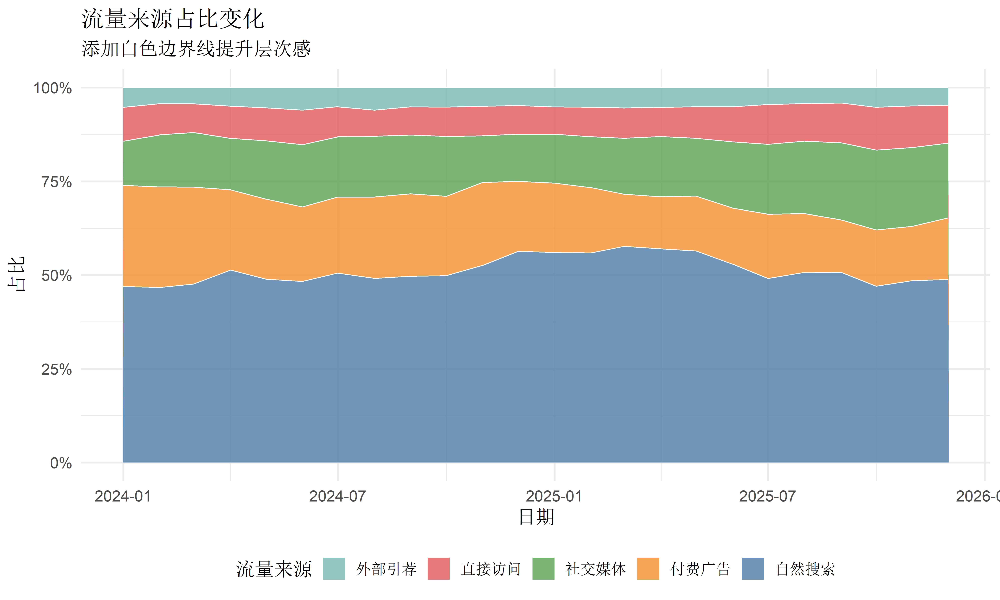
分面面积图
独立面积图
ggplot(traffic_long, aes(x = date, y = visits, fill = source)) +
geom_area(alpha = 0.7) +
geom_line(color = "white", linewidth = 0.5) +
facet_wrap(~source, ncol = 1, scales = "free_y") +
scale_fill_manual(values = source_colors) +
labs(
title = "各流量渠道独立趋势",
x = "日期",
y = "访问量"
) +
theme(
legend.position = "none",
strip.text = element_text(face = "bold", size = 12)
)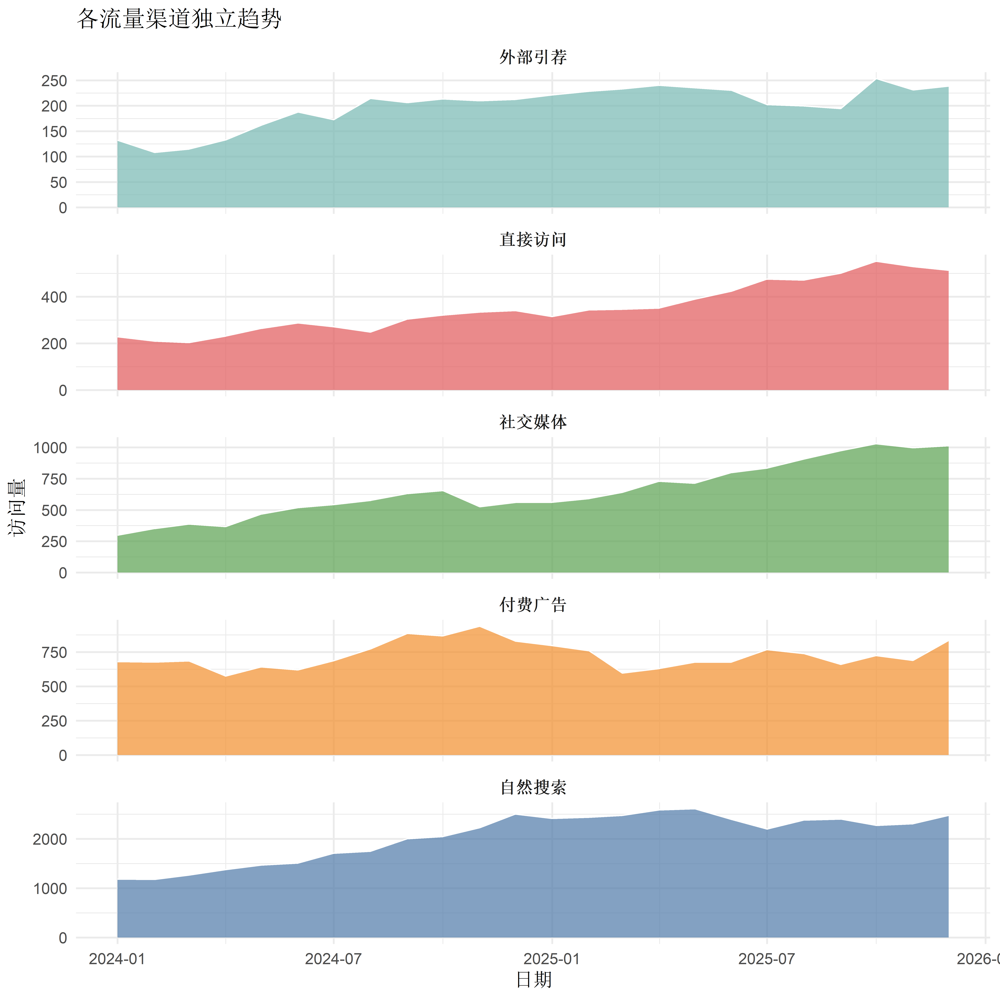
小多图对比
ggplot(traffic_long, aes(x = date, y = visits)) +
geom_area(fill = "#4e79a7", alpha = 0.5) +
geom_line(color = "#4e79a7", linewidth = 0.8) +
facet_wrap(~source, nrow = 1, scales = "fixed") +
labs(
title = "流量渠道对比（统一纵轴）",
x = NULL,
y = "访问量"
) +
theme(
strip.text = element_text(face = "bold"),
axis.text.x = element_text(angle = 45, hjust = 1)
)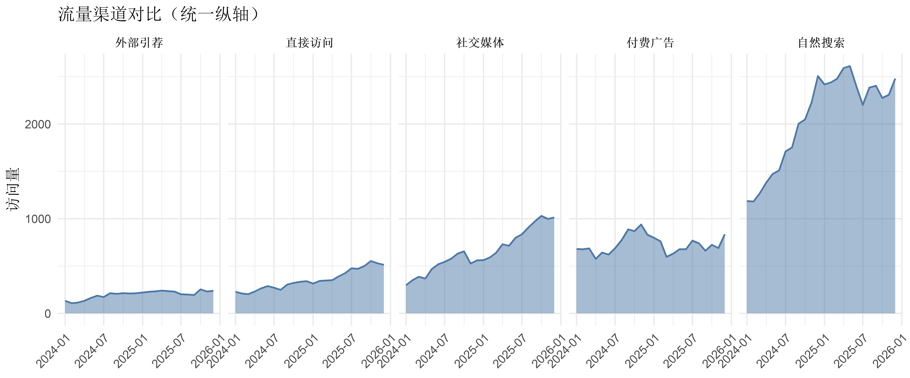
河流图 (Streamgraph)
河流图是居中对称的堆叠面积图，美观且更易发现趋势。
模拟河流图效果
# 使用标准ggplot2创建类似河流图效果
# 计算居中堆叠
traffic_stream <- traffic_long %>%
group_by(date) %>%
mutate(
total = sum(visits),
prop = visits / total
) %>%
ungroup() %>%
arrange(date, source) %>%
group_by(date) %>%
mutate(
ymax = cumsum(visits) - sum(visits) / 2,
ymin = ymax - visits
) %>%
ungroup()
ggplot(traffic_stream, aes(x = date)) +
geom_ribbon(aes(ymin = ymin, ymax = ymax, fill = source), alpha = 0.8) +
scale_fill_manual(values = source_colors) +
labs(
title = "网站流量河流图（居中堆叠）",
subtitle = "各渠道流量对称展示",
x = "日期",
y = NULL,
fill = "流量来源"
) +
theme(
legend.position = "bottom",
axis.text.y = element_blank(),
axis.ticks.y = element_blank(),
panel.grid.major.y = element_blank()
)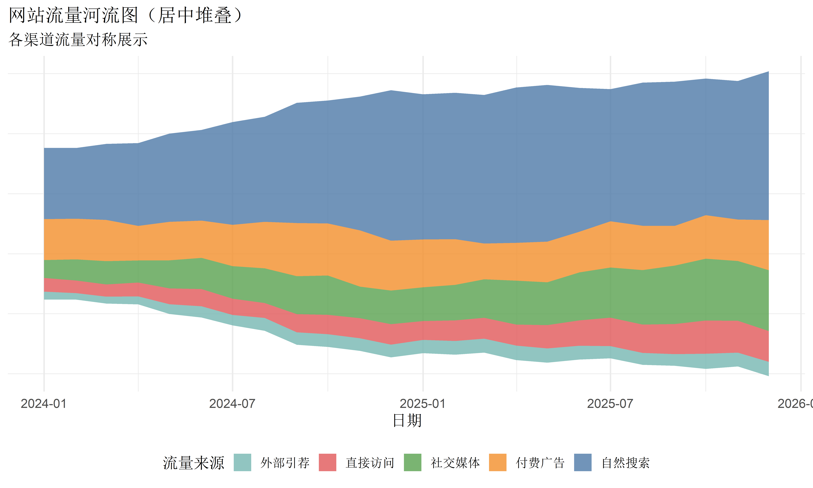
高级河流图 (ggstream 包)
如需更专业的河流图，可安装 ggstream 包：
# install.packages("ggstream")
library(ggstream)
ggplot(traffic_long, aes(x = date, y = visits, fill = source)) +
geom_stream(alpha = 0.8, bw = 0.3) +
scale_fill_manual(values = source_colors) +
labs(title = "河流图", fill = "流量来源")面积图美化技巧
渐变填充
# 使用 ggfx 添加渐变效果（如果可用）
# 手动模拟渐变效果
ggplot(traffic_data, aes(x = date)) +
# 多层半透明填充
geom_area(aes(y = organic), fill = "#4e79a7", alpha = 0.2) +
geom_area(aes(y = organic * 0.8), fill = "#4e79a7", alpha = 0.2) +
geom_area(aes(y = organic * 0.5), fill = "#4e79a7", alpha = 0.3) +
geom_line(aes(y = organic), color = "#4e79a7", linewidth = 1.2) +
labs(
title = "渐变填充效果",
x = "日期",
y = "访问量"
)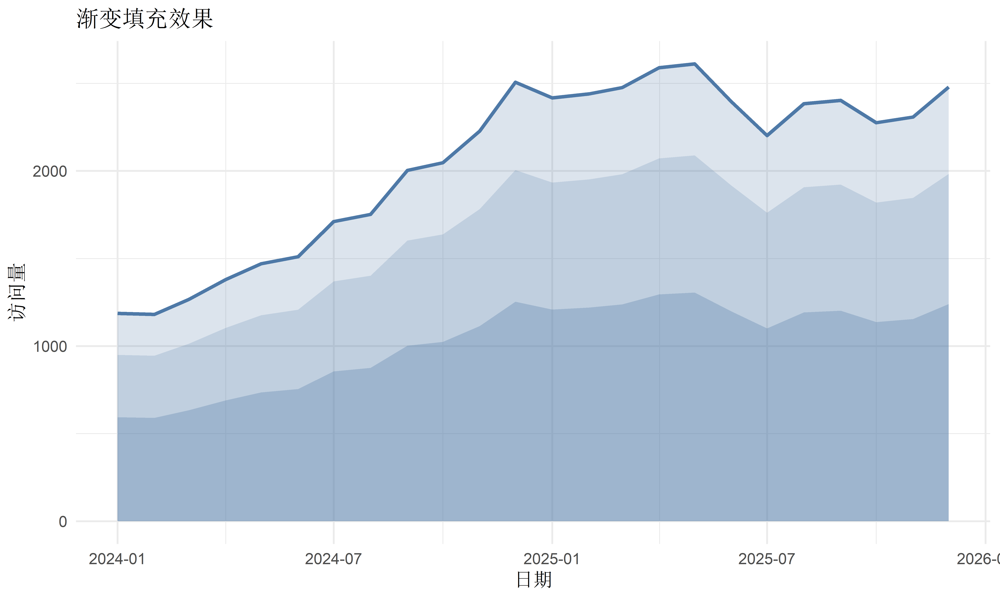
高亮特定区域
ggplot(traffic_data, aes(x = date, y = organic)) +
geom_area(fill = "#4e79a7", alpha = 0.3) +
# 高亮增长期
geom_area(
data = traffic_data %>% filter(date >= as.Date("2024-06-01") & date <= as.Date("2024-12-01")),
fill = "#59a14f", alpha = 0.5
) +
geom_line(color = "#4e79a7", linewidth = 1) +
annotate("text",
x = as.Date("2024-09-01"), y = max(traffic_data$organic) * 0.8,
label = "快速增长期", fontface = "bold", color = "#59a14f"
) +
labs(
title = "自然搜索流量趋势",
subtitle = "绿色区域为快速增长期",
x = "日期",
y = "访问量"
)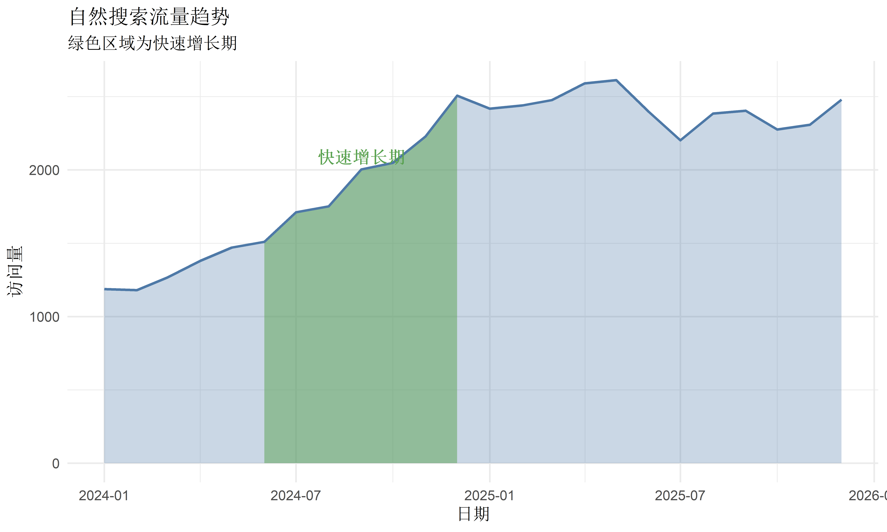
双面积对比
# 创建正负对比数据
compare_data <- data.frame(
date = months,
positive = traffic_data$organic - mean(traffic_data$organic),
negative = traffic_data$paid - mean(traffic_data$paid)
)
ggplot(compare_data, aes(x = date)) +
geom_area(aes(y = positive), fill = "#59a14f", alpha = 0.5) +
geom_area(aes(y = -abs(negative)), fill = "#e15759", alpha = 0.5) +
geom_hline(yintercept = 0, color = "gray40") +
labs(
title = "流量变化对比（相对于均值）",
subtitle = "绿色：自然搜索超均值 | 红色：付费广告超均值",
x = "日期",
y = "偏离均值"
)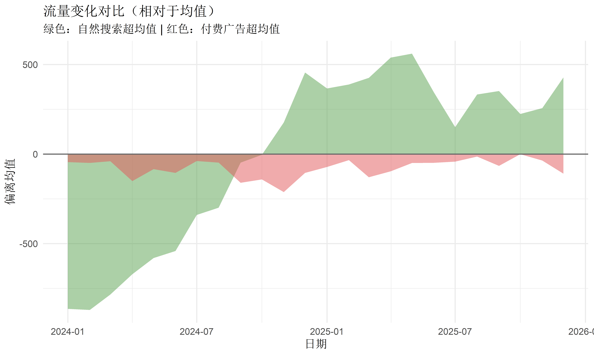
带标签的面积图
直接标签
# 计算标签位置（每个区域的中点）
label_data <- traffic_long %>%
group_by(source) %>%
summarise(
x = median(date),
y = mean(visits)
)
# 计算累积位置
traffic_wide <- traffic_data %>%
mutate(across(c(organic, paid, social, direct, referral), ~ cumsum(.) / row_number()))
ggplot(traffic_long, aes(x = date, y = visits, fill = source)) +
geom_area(alpha = 0.8, color = "white", linewidth = 0.3) +
scale_fill_manual(values = source_colors) +
labs(
title = "网站流量来源构成",
x = "日期",
y = "总访问量"
) +
theme(legend.position = "right")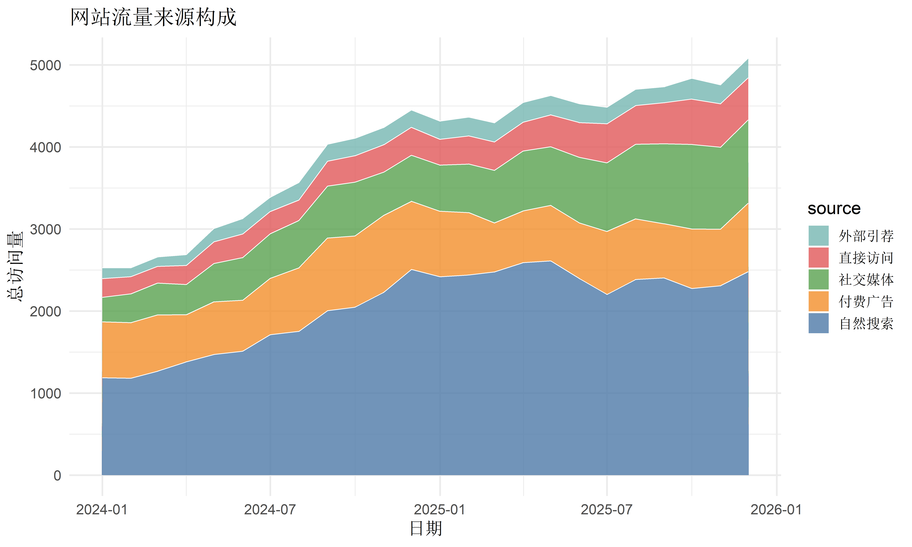
末端标签
# 获取最后一个时间点的值
last_date <- max(traffic_long$date)
# 计算堆叠后的位置
last_values <- traffic_long %>%
filter(date == last_date) %>%
arrange(desc(source)) %>%
mutate(
cumsum_visits = cumsum(visits),
label_y = cumsum_visits - visits / 2
)
ggplot(traffic_long, aes(x = date, y = visits, fill = source)) +
geom_area(alpha = 0.8) +
geom_text(
data = last_values,
aes(x = last_date, y = label_y, label = source),
hjust = -0.1, size = 3.5, fontface = "bold"
) +
scale_fill_manual(values = source_colors) +
scale_x_date(expand = expansion(mult = c(0.02, 0.2))) +
labs(
title = "网站流量来源构成",
x = "日期",
y = "总访问量"
) +
theme(legend.position = "none")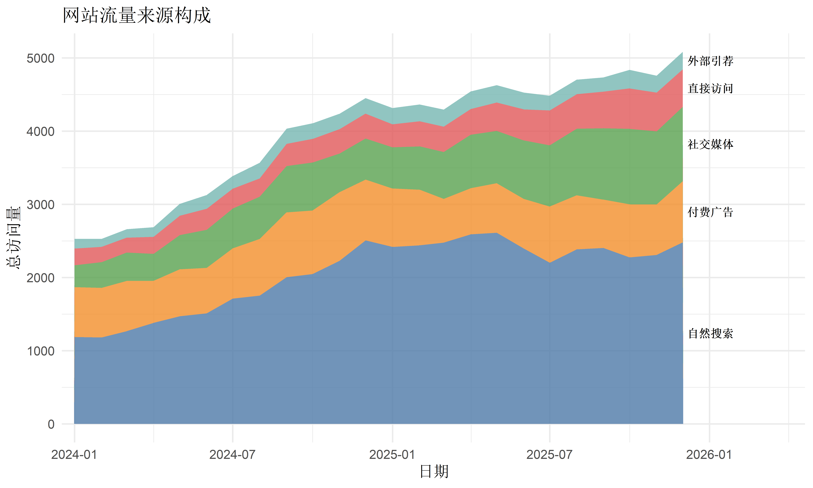
特殊类型面积图
阶梯面积图
# 创建阶梯填充数据
step_data <- traffic_data %>%
arrange(date) %>%
mutate(
date_end = lead(date, default = max(date) + 30)
)
# 使用 geom_rect 模拟阶梯面积图
ggplot(step_data, aes(xmin = date, xmax = date_end, ymin = 0, ymax = organic)) +
geom_rect(fill = "#4e79a7", alpha = 0.5, color = "#4e79a7", linewidth = 0.3) +
geom_step(aes(x = date, y = organic), color = "#4e79a7", linewidth = 1) +
labs(
title = "阶梯面积图",
subtitle = "适合展示离散时间点的变化",
x = "日期",
y = "访问量"
)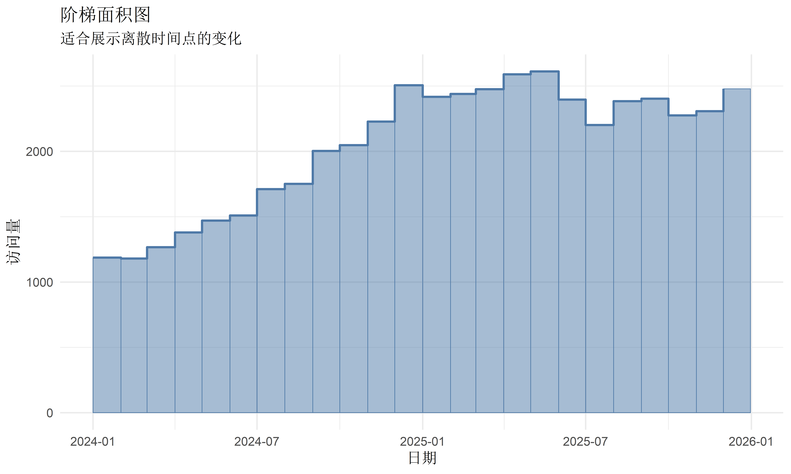
面积图 + 散点
ggplot(traffic_data, aes(x = date, y = organic)) +
geom_area(fill = "#4e79a7", alpha = 0.3) +
geom_line(color = "#4e79a7", linewidth = 1) +
geom_point(color = "#4e79a7", size = 2.5, shape = 21, fill = "white", stroke = 1.5) +
labs(
title = "面积图 + 数据点标记",
x = "日期",
y = "访问量"
)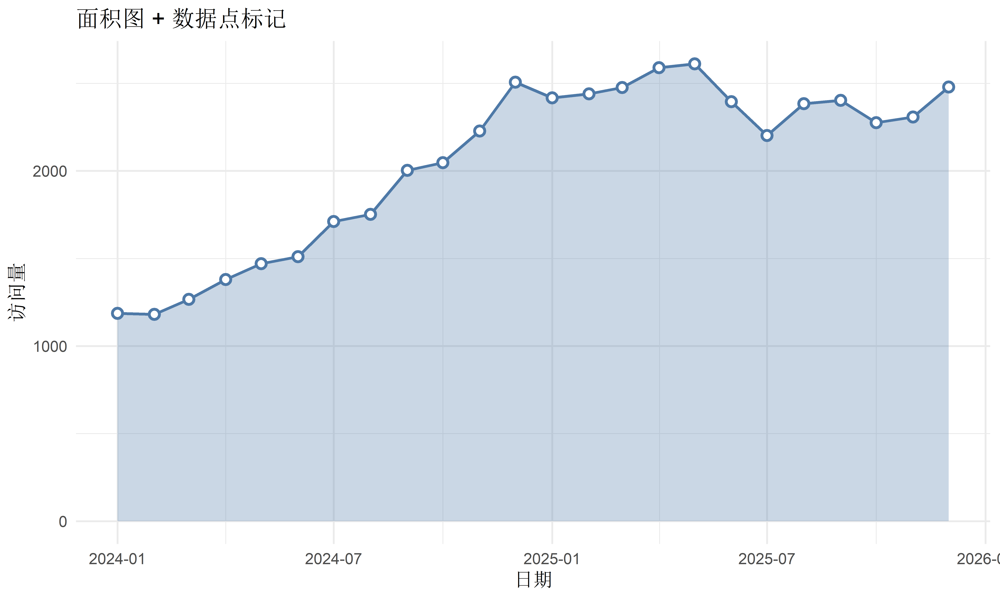
交互式面积图
library(plotly)
# 创建交互式堆叠面积图
p <- ggplot(traffic_long, aes(
x = date, y = visits, fill = source,
text = paste0(source, "\n", format(date, "%Y-%m"), "\n访问量: ", round(visits))
)) +
geom_area(alpha = 0.8) +
scale_fill_manual(values = source_colors) +
labs(
title = "网站流量来源（交互式）",
x = "日期",
y = "访问量"
) +
theme_minimal()
ggplotly(p, tooltip = "text")10. 实战案例：预算分配变化
# 模拟部门预算数据
years <- 2018:2025
budget_data <- data.frame(
year = rep(years, each = 5),
department = rep(c("研发", "市场", "运营", "人力", "行政"), length(years)),
budget = c(
# 各年各部门预算（百万元）
c(50, 30, 25, 15, 10), # 2018
c(55, 32, 26, 16, 11), # 2019
c(62, 35, 28, 18, 12), # 2020
c(70, 38, 30, 20, 13), # 2021
c(80, 42, 32, 22, 14), # 2022
c(90, 45, 35, 24, 15), # 2023
c(105, 48, 38, 26, 16), # 2024
c(120, 52, 40, 28, 17) # 2025
)
)
# 配色
dept_colors <- c(
"研发" = "#4e79a7",
"市场" = "#f28e2b",
"运营" = "#59a14f",
"人力" = "#e15759",
"行政" = "#76b7b2"
)
# 堆叠面积图
p1 <- ggplot(budget_data, aes(x = year, y = budget, fill = department)) +
geom_area(alpha = 0.8, color = "white", linewidth = 0.3) +
scale_fill_manual(values = dept_colors) +
scale_x_continuous(breaks = years) +
labs(
title = "总预算增长趋势",
x = NULL,
y = "预算（百万元）",
fill = "部门"
)
# 百分比堆叠
p2 <- ggplot(budget_data, aes(x = year, y = budget, fill = department)) +
geom_area(position = "fill", alpha = 0.8, color = "white", linewidth = 0.3) +
scale_fill_manual(values = dept_colors) +
scale_x_continuous(breaks = years) +
scale_y_continuous(labels = percent_format()) +
labs(
title = "预算分配比例变化",
x = "年份",
y = "占比",
fill = "部门"
)
# 组合
library(patchwork)
p1 / p2 +
plot_layout(guides = "collect") +
plot_annotation(
title = "公司预算分配 2018-2025",
theme = theme(
plot.title = element_text(size = 18, face = "bold")
)
) &
theme(legend.position = "right")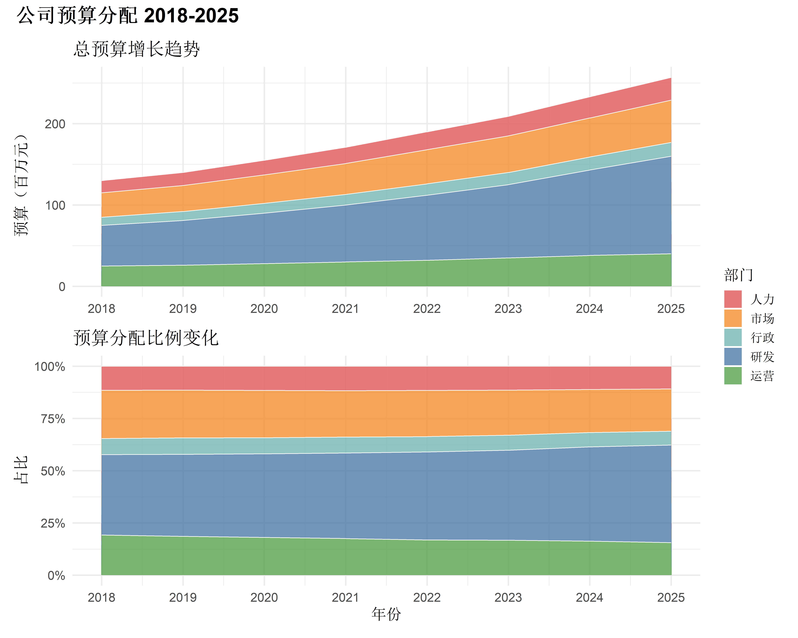
总结
| 类型 | 适用场景 | ggplot2 代码 |
|---|---|---|
| 基础面积图 | 单变量趋势 | geom_area() |
| 堆叠面积图 | 部分与整体 | geom_area() + fill |
| 百分比堆叠 | 比例变化 | position = "fill" |
| 河流图 | 美观展示 | ggstream::geom_stream() |
| 分面面积图 | 多变量对比 | facet_wrap() |
[!TIP] 设计建议： - 堆叠面积图类别不宜超过 6 个 - 将重要类别放在底部（更容易比较） - 使用百分比堆叠时确保数据可比 - 河流图适合展示而非精确分析